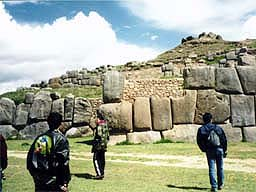
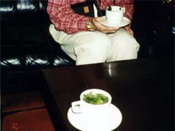
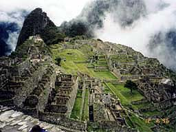
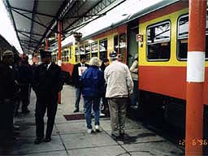
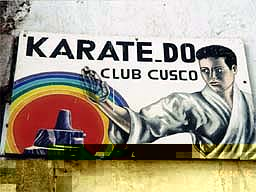

| Sonic Team Goes to South America (4) | |
|
[Sonic Team Goes to South America (3)]
On the 5th, we headed to Cusco, a city located in the high mountains. Cusco was once the capital of the Inca Empire, and even after its demise, people continue to live here. We felt like we were in a basin at an altitude of 3400 meters with people and houses crowded together.
On the 6th, we went to Machu Picchu, a fortified city hidden in the high mountains. It is said that Hayao Miyazaki once visited this place.
December 7. We headed to our final destination, Pachacama. We are released from the thin air of the high mountains.
Thus, the six of us, exhausted both physically and mentally, finished our two-week trip to all the destinations.
The various places we visited this time can be summed up in one word, "ruins", but each was full of its own unique character and charm.
Å@Twenty months have already passed since this trip. How has their inspiration been stimulated by the trip? The end. |  Aaaaahhhh, the oxygen is too weak. |
 In such a case, we would drink this coca tea. |
|  Amazing! Machu Picchu was really there! |
 From a train window in Cusco. |
|  Extra. |
|
| SONIC TEAM 1998 | |